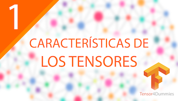

Tensor4Dummies | Parte 5: Procesamiento de imágenes
Funcionamiento y explicación básica de cómo funciona el procesamiento de imágenes y MNIST en TensorFlow.

Introducción
Introducción al procesamiento de imágenes mediante redes neuronales.